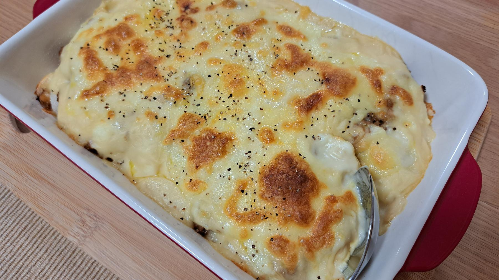

Zurück zur Übersicht
Shepherd's PieCottage Pie
LammhackRinderhack mit Rosmarin, Möhren und Erbsen unter Kartoffelpüree, mit Panko und Cheddar goldbraun überbacken.
- Zeit
- 1 Std. 30 Min.
- Schwierigkeit
- mittel
- Kategorie
- Ofen
- Ernährung
- fleisch
Zutaten
Portionen
Für die Füllung
- 2 ELOlivenöl
- 1 kgLammhackfleisch
- 1 kgRinderhackfleisch
- 1Zwiebel
- 1Möhre
- 3Knoblauchzehen
- 1 ELTomatenmark
- 3Zweige Rosmarin
- Meersalz
- 1½ ELMehl
- 1 ELWorcestersauce
- 2getrocknete Lorbeerblätter
- 500 mlHühnerbrühe
- 500 mlRinderbrühe
- 1Hühnerbrühwürfel
- 1Rinderbrühwürfel
- 150 gTK-Erbsen
Für das Püree und die Kruste
- 1 kgmehligkochende Kartoffeln
- 100 gButter
- 80 mlMilch
- 30 gPanko
- 80 gCheddar, gerieben
Zubereitung
- Die Hälfte des Öls in einer großen Pfanne bei mittlerer bis starker Hitze erhitzen. Das Hack portionsweise kräftig anbraten und dabei mit einem Holzlöffel zerteilen. Herausnehmen und beiseitestellen.
- Zwiebel und Möhre fein würfeln, Knoblauch fein hacken, Rosmarinnadeln hacken. Restliches Öl in einer großen, tiefen Pfanne bei mittlerer Hitze erhitzen, Zwiebel und Möhre darin unter Rühren 5 Minuten weich dünsten. Knoblauch zugeben und 1 Minute mitbraten.
- Tomatenmark und Rosmarin einrühren, 2 Minuten mitrösten und salzen. Das Mehl über das Gemüse streuen und gut unterrühren.
- Das Hack zurück in die Pfanne geben, Worcestersauce und Lorbeerblätter einrühren und die Brühe angießen. Aufkochen und dabei den Bratensatz vom Boden lösen.
- Den Brühwürfel darüberbröseln, einrühren und alles zugedeckt bei schwacher Hitze 30 Minuten köcheln lassen.
- Inzwischen die Kartoffeln schälen, in grobe Stücke schneiden und in einem großen Topf mit kaltem Salzwasser aufsetzen. Bei mittlerer bis starker Hitze etwa 35 Minuten kochen, bis sie weich sind. Gut abgießen und im Sieb über dem heißen Topf ausdampfen lassen.
- Kartoffeln zerstampfen oder durch die Presse drücken. Butter und Milch unterrühren, salzen und glatt rühren.
- Den Backofen auf 180 °C Umluft vorheizen.
- Lorbeerblätter aus der Füllung entfernen, die Erbsen unterrühren und alles in eine Auflaufform (etwa 2,5 l) füllen.
- Das Püree darauf verteilen, sodass die Füllung ganz bedeckt ist. Mit Panko und dann mit Cheddar bestreuen.
- Etwa 25 Minuten backen, ein Blech darunterschieben, falls etwas überläuft.
- Vor dem Servieren 5 Minuten ruhen lassen.
Tipp: Shepherd's Pie wird mit Lamm gemacht, die Variante mit Rinderhack heißt Cottage Pie. Dazu passt Rinderbrühe statt Hühnerbrühe, sonst bleibt alles gleich.
Quelle: nach einem Rezept von Andy Cooks.